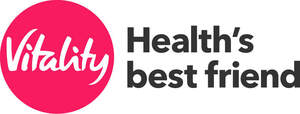
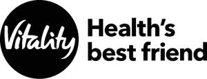
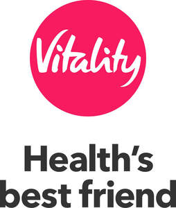
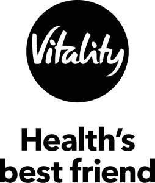
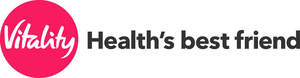
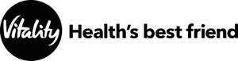

Trade Mark Journal No.2025/051 19 December 2025
UK00004282814 23 October 2025 (9,35,36,41,44)
Mark 1

Mark 2

Mark 3

Mark 4

Mark 5

Mark 6

- Class 9
- Downloadable software in the nature of mobile phone applications that provide access to information, advice, food and exercise databases and calculation tools in the fields of diet, fitness, and lifestyle wellness; wearable fitness devices including sensors for monitoring, collecting and transmitting movement and other data and providing training instructions during exercise; software for use in conjunction with wearable fitness devices including sensors for monitoring, collecting and transmitting movement and other data; Credit cards.
- Class 35
- User incentive schemes relating to the use of credit cards; Business management, business administration; organisation, management and supervision of incentive or loyalty programmes and other promotional schemes; incentive loyalty programmes, including rewards or bonuses for healthy lifestyle choices; promoting the sale of goods and services of others by awarding points or rewards for purchases, membership or participation; promotion of sports competitions and cultural activities of others; business services for the administration and management of healthcare costs; the provision of business administration services to others in connection with life insurance schemes, long term insurance schemes, protection policies, medical insurance schemes, schemes of insurance cover for non-medical expenses incurred during time in hospital, dental treatment and expenses insurance schemes, optical treatment and expenses insurance schemes, schemes of insurance cover for serious illness, critical illness or disability expenses, schemes of insurance cover for unemployment and income protection, schemes of insurance cover for business protection, contracts of insurance offering non-financial benefits; the provision of business administration services to others in connection with medical expenses trusts and other non-insurance schemes for the provision of medical expenses benefits; information, advisory and consultancy services relating to the aforesaid.
- Class 36
- Financial affairs; insurance, insurance underwriting; financial sponsorships of sports competitions and cultural activities of others; financial sponsorships of sports clubs and associations, sports competitions, sports and leisure events and sports personalities; credit card services; investments, including any asset, right or interest; investment services; investment management; issuing of tokens of value in relation to customer loyalty schemes and programmes; providing financial information in connection with any of the foregoing including information for health plan members to inform them of health issues, incentives and other information relevant to health care; financial administration and management of insurance plans and savings accounts; financial administration and management of healthcare costs; financial administration and management of employee health and wellness programmes and of employee benefit programmes; assurance; financial services; unit trust services; financing and procurement of financing; loan advice; loan procurement; capital administration services; financial administration services; pension fund administration; deposit taking services; funds transfer services; brokerage agencies for insurance and credit; handling subscriptions and offerings of securities; credit sales; financial reports; management of wealth; financial management consultancy and administration services; life insurance; long term insurance; protection policies, medical insurance; insurance cover for non-medical expenses incurred during time in hospital; insurance for dental treatment and expenses; insurance for optical treatment and expenses; insurance cover for serious illness, critical illness or disability expenses; insurance cover for unemployment and income protection; insurance cover for business protection; contracts of insurance offering non-financial benefits; information, advisory and consultancy services relating to the aforesaid.
- Class 41
- Education; entertainment; providing of training: education and entertainment provided on-line via the Internet, or other global communications network: sporting and cultural activities; providing electronic publications; publication of health and fitness periodicals and printed texts, advice; provision of online computer games; provision of games by means of a computer based system; organisation of quizzes, games and competitions; consultancy and information services relating to the foregoing provided on-line via the Internet, or other global communications network; providing information in the fields of fitness including via a global computer network; providing information, advice and consultation in relation to health clubs; fitness assessment services; information, advisory and consultancy services relating to the aforesaid.
- Class 44
- Providing information in the fields of health, fitness, nutrition, health care and medical care, including via a global computer network; health care and wellness programmes; medical services; health care; dentistry services; nutrition and dietary services; health and fitness assessment services; health screening services; health assessment surveys and questionnaires; compilation of medical reports and reviews; virtual age calculation for health and fitness purposes; monitoring of patients; provision of a repeat prescription service; blood pressure monitoring services; blood glucose testing services; consultancy and advisory services relating to all the aforesaid services; hygienic and beauty care for human beings; health care services for human beings which are complementary to conventional medical services; therapeutic treatment services for human beings which are alternatives to medical services; nursing services for human beings; medical services provided in ambulances; information, advisory and consultancy services relating to the aforesaid.
Vitality Corporate Services Limited
Representative: CMS Cameron McKenna Nabarro Olswang LLP